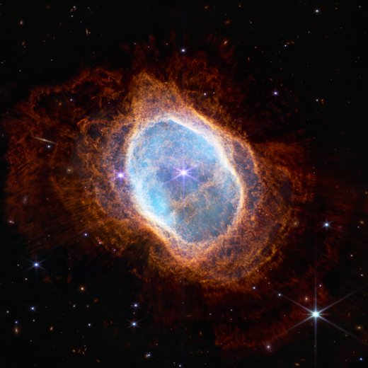

O céu visto pelos telescópios




Um canal sobre o universo que diz o que é certo, o que é debate e o que é hipótese.

Designer e editor de vídeo, estudou Física na UFSCar e é apaixonado por astronomia desde criança, quando maratonava documentários sobre o espaço na TV.
O Estrela Negra nasceu como podcast e hoje é um canal de vídeo sobre o universo, com identidade visual, animação e locução feitas por ele.
Cada vídeo explica um assunto do universo do jeito que se conta para um amigo, sem deixar de lado o rigor: toda afirmação tem fonte, e o vídeo diz com que grau de certeza a ciência sabe o que está sendo contado.